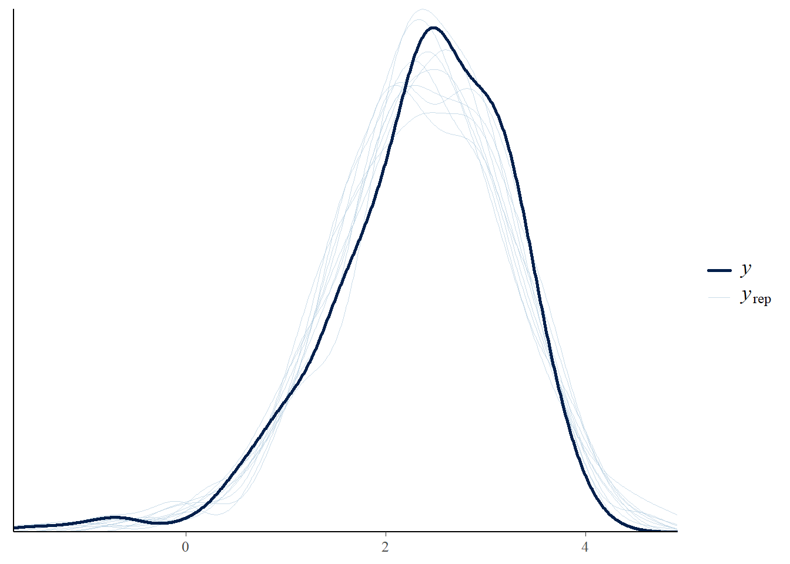

Week 9: Cluster Smart with Bayes
NOT READY YET
Learnings
- Outcomes
– LO2: Demonstrate how to specify and fit simple Bayesian models with appropriate attention to the role of the prior distribution and the data model.
– LO4: Demonstrate proficiency in using statistical software packages (R) to specify and fit models, assess model fit, detect and remediate non-convergence, and compare models.
– LO5: Engage in specifying, checking and interpreting Bayesian statistical analyses in practical problems using effective communication with health and medical investigators.
- Objectives
By the end of this week you should be able to:
– Learn the difference between clustered and non-clustered data.
– Implement Bayesian hierarchical (or multilevel) models.
– Interpret real-life clustered data problems in Bayesian context.
Clustered Data
Clustered data refers to observations that are grouped into clusters, where data points within the same cluster tend to be more similar to each other than to those in other clusters. This structure often arises naturally in health and medical research, where measurements are taken on individuals who share a common setting, treatment provider, or geographic location. A common example, say in healthcare is data collected from multiple patients treated within the same hospital or clinic. Patients within a single hospital may receive similar types of care, be exposed to the same medical practitioner, and follow similar protocols. As a result, their outcomes, such as recovery time or treatment success often are more alike compared to patients from different hospitals. Another example occurs say in longitudinal studies, where repeated measurements are taken from the same individual over time. Here, each individual forms a cluster of observations. For instance, a study tracking blood pressure readings in hypertensive patients over several months will generate multiple observations per patient, and these readings are naturally correlated.
In both cases, recognising and correctly handling clustered data ensures more accurate inferences and better decision-making in health and medical research. A Bayesian hierarchical model (also known as Bayesian multilevel model) can handle this types of complexity by introducing levels of variation (hierarchies) and latent processes that influence the observed data.
Why Consider Clustering?
Not accounting for clustering effects in modelling often leads to issues that compromise the validity, reliability, and interpretability of the results. Bayesian hierarchical modelling is actually designed to handle clustering. That said, if clustering is not properly modelled even within a Bayesian framework, similar issues can still occur. Let’s go through some of the problems below:
Underestimated Posterior Uncertainty: When clusters are ignored (e.g., no latent effects or hierarchical structure), the model assumes full independence. This leads to overconfident posterior estimates (i.e., narrow credible intervals), similar to underestimated standard errors in frequentist models.
Biased Posterior Estimates: Without modeling cluster-level effects, the posterior distribution may be pulled too strongly by certain clusters (e.g., large hospitals or outlier clinics). This skews inferences about population-level parameters.
Invalid Posterior Inference: Posterior summaries (means, medians, credible intervals) assume the model structure is correct. If clustering is ignored, the posteriors may not reflect the true data-generating process, leading to misleading decisions or predictions.
Model Misspecification: Ignoring clustering violates the conditional independence assumptions built into the likelihood. This leads to a mismatch between model assumptions and data structure, harming model fit and diagnostics.
Loss of Information Sharing (No Partial Pooling): Without hierarchical modeling, there is no borrowing of strength across clusters. Hence, small clusters may have unstable estimates, while large clusters may dominate the inference.
Poor Generalisability (Out-of-Sample): A model without clustering may overfit to the specific sampled clusters, especially when data is sparse or imbalanced across groups. Hence, predictions for new clusters (e.g., new hospitals) are unreliable.
C-Reactive Protein Data
Before explaining the Bayesian hierarchical (or multilevel) model, let us explain a clustered data on C-reactive protein measured at the intensive care unit (ICU).
In this example, we examine data collected from patients admitted to the intensive care unit (ICU). Our primary focus is on the measurement of C-reactive protein (CRP) levels (in mg/L), which were recorded daily over the first six days following ICU admission. These repeated measurements allow us to study the progression of inflammation during the early phase of critical illness.
We interpret CRP levels based on commonly accepted reference ranges. A CRP level of less than 3 mg/L is generally considered normal for most healthy individuals. When CRP levels fall between 3 and 10 mg/L, they may still be within the normal range but can also indicate a mild elevation. This slight increase is sometimes observed in conditions such as chronic low-grade inflammation. When CRP levels rise to 10 mg/L or higher, we consider this indicative of a more significant inflammatory response. Such elevated levels may reflect the presence of infection, acute inflammation, or other underlying medical conditions requiring further investigation.
Now, each patient in the dataset is identified by a unique ID, which enables us to link multiple CRP measurements to the same individual. In addition to CRP levels, we have several patient-level variables that provide important clinical and demographic context.
Specifically, we have data on the patient’s age and sex, as well as their sepsis status at admission, categorised as sepsis, severe sepsis, or septic shock. The more severe the systemic inflammatory response in sepsis, the higher and more prolonged the CRP levels tend to be. Septic shock, a severe form of sepsis characterised by dangerously low blood pressure, is often associated with persistently high CRP levels. For our data, we also know whether each patient was given antibiotics within the first hour of ICU admission, which may be an indicator of timely clinical intervention. Finally, we include the patient’s discharge status from the ICU, recorded as either alive or dead.
Code
library(tidyverse)
library(skimr)
crp_data <- read.csv("crp_data_complete.csv")
crp_data <- tibble(
ID = crp_data$ID,
CRP = crp_data$crp,
Day = crp_data$day,
Antibiotic = as.factor(crp_data$antib_1h),
Age = crp_data$age,
Sex = as.factor(crp_data$SEX),
Sepsis = as.factor(crp_data$SEPSIS),
Discharg = as.factor(crp_data$discharge_r)
)
skimr:::skim_without_charts(crp_data[,-1])| Name | crp_data[, -1] |
| Number of rows | 432 |
| Number of columns | 7 |
| _______________________ | |
| Column type frequency: | |
| factor | 4 |
| numeric | 3 |
| ________________________ | |
| Group variables | None |
Variable type: factor
| skim_variable | n_missing | complete_rate | ordered | n_unique | top_counts |
|---|---|---|---|---|---|
| Antibiotic | 0 | 1 | FALSE | 2 | No: 234, Yes: 198 |
| Sex | 0 | 1 | FALSE | 2 | Mal: 276, Fem: 156 |
| Sepsis | 0 | 1 | FALSE | 3 | Sep: 228, Sev: 180, Sep: 24 |
| Discharg | 0 | 1 | FALSE | 2 | Ali: 354, Dea: 78 |
Variable type: numeric
| skim_variable | n_missing | complete_rate | mean | sd | p0 | p25 | p50 | p75 | p100 |
|---|---|---|---|---|---|---|---|---|---|
| CRP | 0 | 1 | 14.40 | 10.75 | 0.2 | 6.40 | 11.5 | 20.2 | 68.6 |
| Day | 0 | 1 | 3.50 | 1.71 | 1.0 | 2.00 | 3.5 | 5.0 | 6.0 |
| Age | 0 | 1 | 63.92 | 16.79 | 18.0 | 52.75 | 69.0 | 78.0 | 91.0 |
Bayesian Hierarchical (Multilevel) Model
Simple Model for Clustering
Let’s start developing a simple model, where we can address the clustering effect. To create such model, we can introducte dummy variable for the cluster variable. For the CRP data, ID variable is refering the patients and we convert ID variable into a dummay variable and we get ID (or subject) specific regression coefficients.
These types of models are sometimes referred to as ‘fixed effects’ models in frequentis approach, to distinguish them from ‘random effects’ models, though the terminology is not universally agreed upon. In particular, the terms ‘fixed’ and ‘random’ are used in various contexts and are often applied inconsistently or inappropriately.
More recently, this type of model in Bayesian context is often described as a ‘no pooling’ model, in contrast to ‘complete pooling’ and ‘partial pooling’ approaches. Now we will discuss these types of pooling approaches starting with ‘complete pooling’ and ‘no pooling’ models.
Complete Pooling
In complete pooling, we ignore the clustering structure and fit a single set of parameters for all individuals/clusters. We assume everyone follows the same model. Thus, for a simple intercept only model, we can write:
\[ \text{CRP}_{ij} \sim N(\beta_0\cdot1,\sigma^2) \]
where, \(i\) represents the number of observations for each individual/cluster and \(j\) represents the number of indiviluals/clusters, i.e., we can write \(i=1,\cdots,n_j\), \(j=1,\cdots,J\), and total number of observations \(n=\sum_{j=1}^J\sum_{i=1}^{n_j} n_{ij}\). This model is nothing but a simple linear regression without any predictor variable. We can use a prior distribution for the intercept, such that \(\beta_0 \sim N(0,\sigma^2_0)\), and add the weakly informative, non-informative or informative situations towards the variance hyper-parameter \(\sigma^2_0\), as we have discussed in our previous lectures. Hence, we get the posterior distribution of \(\beta_0\) from the completely pooled model.
No Pooling
In no pooling, we fully account for the clustering structure by estimating separate parameters for each individual or cluster. That is, we do not share any information across individuals or clusters. Each cluster gets its own independent model, and we assume the data for each cluster is generated from its own set of parameters.
For a simple intercept-only model under no pooling, we write:
\[ \text{CRP}_{ij} \sim N(\beta_{0j} \cdot 1, \sigma^2) \]
Here, \(i = 1,\cdots,n_j\) denotes the observations within each individual or cluster \(j = 1,\cdots, J\), and \(\beta_{0j}\) is a unique intercept parameter for each cluster \(j\). This means that we estimate \(J\) separate intercepts, one for each group, without any sharing or pooling of information between groups.
To complete the Bayesian formulation, we specify a prior for each \(\beta_{0j}\), such as:
\[ \beta_{0j} \sim N(0, \sigma_{0}^2) \]
This prior can be weakly informative, non-informative, or informative, depending on the context and prior knowledge. Since there is no sharing of information across clusters, the posterior distribution of each \(\beta_{0j}\) is informed only by the data from the corresponding group \(j\) and the prior.
This model structure is highly flexible but may suffer from overfitting, especially when the number of observations within some clusters is small. Unlike complete pooling, no pooling does not assume a common intercept across all clusters but instead treats each as an entirely separate entity.
Partial Pooling
Now for partial pooling, we strike a balance between complete pooling and no pooling by allowing the parameters for each cluster to vary, while also sharing information across clusters. This is typically done using a model, where individual cluster parameters are assumed to come from a common population-level distribution. As a result, the estimates for each cluster are “shrunk” toward the overall mean, with the degree of shrinkage depending on the amount of data available in each cluster and the variability across clusters.
For a simple intercept-only model under partial pooling, we write:
\[ \text{CRP}_{ij} \sim N((\beta_0 + \beta_{0j}) \cdot 1, \sigma^2) \]
Here, \(\beta_0\) is a global intercept shared across all clusters, and \(\beta_{0j}\) is a group-specific deviation from the global intercept for cluster \(j\), where we assume that \(\beta_{0j}\) follows a normal (or Gaussian) distribution, and write \(\beta_{0j} \sim N(0, \sigma_{0}^2)\). Note that, unlike no pooling model, here in the partial pooling model we are treating \(\beta_{0j}\) as randomly distributed with mean zero and an unknown group/cluster specific variance \(\sigma_0^2\). Hence, we are interested to learn about the estimate of the group-wise or cluster variability \(\sigma_0^2\).
Now, as a Bayesian we need define the distributions for the model parameters:
\[ \beta_{0} \sim N(0,\sigma^2_{00}); \quad \beta_{0j} \sim N(0, \sigma_{0}^2); \]
\[ \sigma_{0} \sim \text{Half-Cauchy}(0,\tau_0); \quad \sigma \sim \text{Half-Cauchy}(0,\tau); \]
The term, \(\beta_{0j}\) in this model are providing no pulling and mimicing a random process or effect, whereas, \(\beta_0\) is the global intercept. Thus, using the prior distribution hierarchies, we can get the posteriors for \(\beta_0\) and \(\beta_{0j}\) accordingly.
This structure allows the model to pool information across clusters while still allowing each cluster to have its own intercept. The posterior estimates of the cluster effects \(\beta_{0j}\) are ‘partially pooled’ toward the global mean \(\beta_0\), with the amount of shrinkage determined by the variance parameter \(\sigma_{0j}^2\): clusters with less data (or higher uncertainty) are pulled more toward the global mean, while clusters with more data retain more individualized estimates.
Partial pooling provides a compromise: it avoids the rigidity of complete pooling (which assumes all clusters are the same) and the potential overfitting of no pooling (which treats all clusters as completely separate). The result is more stable and interpretable estimates, especially when the number of observations per cluster is highly variable.
Comparative Analysis
Here’s a table summarising the completely pooled, no pooling, and partial pooling models, with the prior distributions and hyper parameters:
| Completely Pooled | No Pooling | Partial Pooling |
|---|---|---|
| \(\text{CRP}_{ij} = \beta_0 + \epsilon_{ij}\) | \(\text{CRP}_{ij} = \beta_{0j} + \epsilon_{ij}\) | \(\text{CRP}_{ij} = \beta_0 + \beta_{0j} + \epsilon_{ij}\) |
| \(\epsilon_{ij} \sim N(0,\sigma^2)\) | \(\epsilon_{ij} \sim N(0, \sigma^2)\) | \(\epsilon_{ij} \sim N(0,\sigma^2)\) |
| \(\beta_{0} \sim N(0, \sigma_0^2 = 10^2)\) | \(\beta_{0j} \sim N(0, \sigma_0^2 = 10^2)\) | \(\beta_0 \sim N(0, \sigma_{00}^2 = 10^2)\) |
| \(\sigma \sim \text{Half-Cauchy}(0, \tau = 1)\) | \(\sigma \sim \text{Half-Cauchy}(0, \tau = 1)\) | \(\beta_{0j} \sim N(0, \sigma_0^2)\) |
| — | — | \(\sigma_0 \sim \text{Half-Cauchy}(0, \tau_0 = 1)\) |
| — | — | \(\sigma \sim \text{Half-Cauchy}(0, \tau = 1)\) |
Following this we get the posterior summaries as follows:
Code
library(tidyverse)
library(skimr)
crp_data <- read.csv("crp_data_complete.csv")
crp_data <- tibble(
ID = crp_data$ID,
CRP = crp_data$crp,
CRP_log = log(crp_data$crp),
Day = crp_data$day,
Antibiotic = as.factor(crp_data$antib_1h),
Age = crp_data$age,
Sex = as.factor(crp_data$SEX),
Sepsis = as.factor(crp_data$SEPSIS),
Discharg = as.factor(crp_data$discharge_r)
)
crp_data_subset <- subset(crp_data, ID < 1500)
##
library(brms)
library(tidyverse)
complete_pooling_model <- brm(
formula = CRP ~ 1, # Single intercept, no ID-specific effects
data = crp_data_subset,
family = gaussian(),
prior = c(
prior(normal(0, 10), class = "Intercept"), # Prior on the global intercept
prior(cauchy(0, 1), class = "sigma") # Prior on residual SD
),
cores = 3, chains = 3, iter = 2000
)
cat(
"Complete Pooling Model Summary:\n",
paste(capture.output(summary(complete_pooling_model)), collapse = "\n"),
"\n"
)Complete Pooling Model Summary:
Family: gaussian
Links: mu = identity; sigma = identity
Formula: CRP ~ 1
Data: crp_data_subset (Number of observations: 90)
Draws: 3 chains, each with iter = 2000; warmup = 1000; thin = 1;
total post-warmup draws = 3000
Regression Coefficients:
Estimate Est.Error l-95% CI u-95% CI Rhat Bulk_ESS Tail_ESS
Intercept 14.62 1.22 12.26 16.94 1.00 2180 1771
Further Distributional Parameters:
Estimate Est.Error l-95% CI u-95% CI Rhat Bulk_ESS Tail_ESS
sigma 11.47 0.87 9.89 13.31 1.00 2567 1870
Draws were sampled using sampling(NUTS). For each parameter, Bulk_ESS
and Tail_ESS are effective sample size measures, and Rhat is the potential
scale reduction factor on split chains (at convergence, Rhat = 1). Code
no_pooling_model <- brm(
formula = CRP ~ 0 + factor(ID), # separate intercept for each ID
data = crp_data_subset,
family = gaussian(),
prior = c(
prior(normal(0, 10), class = "b"), # N(mean, sd)
prior(cauchy(0, 1), class = "sigma") # Half-Cauchy prior for sigma
),
cores = 3, chains = 3, iter = 2000
)
cat(
"No Pooling Model Summary:\n",
paste(capture.output(summary(no_pooling_model)), collapse = "\n"),
"\n"
)No Pooling Model Summary:
Family: gaussian
Links: mu = identity; sigma = identity
Formula: CRP ~ 0 + factor(ID)
Data: crp_data_subset (Number of observations: 90)
Draws: 3 chains, each with iter = 2000; warmup = 1000; thin = 1;
total post-warmup draws = 3000
Regression Coefficients:
Estimate Est.Error l-95% CI u-95% CI Rhat Bulk_ESS Tail_ESS
factorID122 3.67 3.16 -2.45 9.98 1.00 7400 2261
factorID133 10.82 3.27 4.29 17.35 1.00 7209 2130
factorID246 14.43 3.17 8.00 20.71 1.00 6773 1918
factorID506 11.86 3.26 5.46 18.49 1.00 9186 1937
factorID603 16.90 3.20 10.66 23.31 1.00 8017 2299
factorID663 3.15 3.17 -2.98 9.35 1.00 7874 2283
factorID756 6.77 3.12 0.74 12.82 1.00 7696 2222
factorID826 12.76 3.10 6.64 18.80 1.00 6679 2236
factorID861 24.05 3.22 17.62 30.22 1.00 6584 2608
factorID878 26.82 3.15 20.47 32.92 1.00 6421 2391
factorID880 28.88 3.15 22.66 34.96 1.00 5755 2162
factorID926 9.95 3.14 3.65 16.12 1.00 6579 2127
factorID951 5.94 3.12 -0.20 11.90 1.00 7573 1988
factorID995 6.83 3.15 0.71 12.98 1.00 7442 2039
factorID998 16.72 3.24 10.42 23.07 1.00 5909 2488
Further Distributional Parameters:
Estimate Est.Error l-95% CI u-95% CI Rhat Bulk_ESS Tail_ESS
sigma 8.13 0.71 6.93 9.75 1.00 3798 2348
Draws were sampled using sampling(NUTS). For each parameter, Bulk_ESS
and Tail_ESS are effective sample size measures, and Rhat is the potential
scale reduction factor on split chains (at convergence, Rhat = 1). Code
##
partial_pooling_model <- brm(
formula = CRP ~ 1 + (1 | ID), # random intercept for each ID
data = crp_data_subset,
family = gaussian(),
prior = c(
prior(normal(0, 10), class = "Intercept"), # N(mean, sd)
prior(cauchy(0, 1), class = "sigma"), # Half-Cauchy prior for sigma
prior(cauchy(0, 1), class = "sd") # prior for the variation across IDs
),
cores = 3, chains = 3, iter = 2000
)
cat(
"Partial Pooling Model Summary:\n",
paste(capture.output(summary(partial_pooling_model)), collapse = "\n"),
"\n"
)Partial Pooling Model Summary:
Family: gaussian
Links: mu = identity; sigma = identity
Formula: CRP ~ 1 + (1 | ID)
Data: crp_data_subset (Number of observations: 90)
Draws: 3 chains, each with iter = 2000; warmup = 1000; thin = 1;
total post-warmup draws = 3000
Multilevel Hyperparameters:
~ID (Number of levels: 15)
Estimate Est.Error l-95% CI u-95% CI Rhat Bulk_ESS Tail_ESS
sd(Intercept) 8.61 1.96 5.64 13.30 1.01 759 1004
Regression Coefficients:
Estimate Est.Error l-95% CI u-95% CI Rhat Bulk_ESS Tail_ESS
Intercept 13.88 2.32 9.01 18.32 1.00 902 1335
Further Distributional Parameters:
Estimate Est.Error l-95% CI u-95% CI Rhat Bulk_ESS Tail_ESS
sigma 7.99 0.65 6.83 9.37 1.00 2539 2229
Draws were sampled using sampling(NUTS). For each parameter, Bulk_ESS
and Tail_ESS are effective sample size measures, and Rhat is the potential
scale reduction factor on split chains (at convergence, Rhat = 1). Code
##We can see that in the no pooling model, the posterior estimates are provided for each individual ID. In this model, the IDs are treated as completely separate, with each having its own intercept estimated independently from all others. As a result, we obtain distinct estimates for 15 IDs (since we have only considered the first 15 IDs from the CRP dataset for illustration).
Whereas, the partial pooling model assumes that individual intercepts are drawn from a common distribution. This hierarchical structure allows the model to “borrow strength” from the group, which leads to more stable and regularized estimates—particularly for IDs with limited data.
We also observe that the posterior mean estimate for the complete pooling model is approximately the same as the group-level mean in the partial pooling model. This is because, in partial pooling, individual estimates are shrunk toward the group mean, which itself closely aligns with the complete pooling estimate that assumes no variation between IDs.
However, we can see that the credible interval in the complete pooling model is narrower compared to that of the partial pooling model. This occurs because the complete pooling model assumes no between-ID variability, attributing all uncertainty to residual error. Here, the partial pooling model accounts for both residual error and variation across individuals, which increases overall uncertainty in individual-level estimates.
Code
library(tidyverse)
##
complete_pooling_draws <- as_draws_df(complete_pooling_model) %>%
select(b_Intercept) %>%
rename(estimate = b_Intercept)
unique_ids <- unique(crp_data_subset$ID)
summary_df_complete <- tibble(
parameter = as.character(unique_ids),
median = median(complete_pooling_draws$estimate),
lower = quantile(complete_pooling_draws$estimate, 0.025),
upper = quantile(complete_pooling_draws$estimate, 0.975)
)
##
no_pooling_draws <- as_draws_df(no_pooling_model) %>%
select(starts_with("b_factorID")) %>%
pivot_longer(cols = everything(),
names_to = "parameter",
values_to = "estimate") %>%
mutate(model = "No pooling")
summary_df_no_pooling <- no_pooling_draws %>%
group_by(parameter) %>%
summarise(
median = median(estimate),
lower = quantile(estimate, 0.025),
upper = quantile(estimate, 0.975),
.groups = "drop"
)
partial_draws <- as_draws_df(partial_pooling_model) %>%
select(starts_with("r_ID")) %>%
pivot_longer(cols = everything(),
names_to = "parameter",
values_to = "estimate") %>%
mutate(parameter = str_remove(parameter, "r_ID\\[|,Intercept\\]"),
model = "Partial pooling")
summary_df_partial <- partial_draws %>%
group_by(parameter) %>%
summarise(
median = median(estimate),
lower = quantile(estimate, 0.025),
upper = quantile(estimate, 0.975),
.groups = "drop"
)
library(ggplot2)
# Remove "b_factorID" prefix for no pooling model
summary_df_no_pooling <- summary_df_no_pooling %>%
mutate(parameter = str_remove(parameter, "b_factorID"))
# Remove any prefix from partial pooling model if needed
summary_df_partial <- summary_df_partial %>%
mutate(parameter = str_remove(parameter, "r_ID\\[|,Intercept\\]"))
p1 <- ggplot(summary_df_no_pooling, aes(x = parameter, y = median)) +
geom_point(color = "steelblue", position = position_dodge(width = 0.5), size = 3) +
geom_errorbar(aes(ymin = lower, ymax = upper),
color = "steelblue",
position = position_dodge(width = 0.5), width = 0.2) +
labs(title = "ID: No Pooling",
y = "Posterior Estimate (No Pooling)",
x = "ID") +
theme_minimal() + ylim(-20, 40) +
theme(axis.text.x = element_text(angle = 45, hjust = 1))
p2 <- ggplot(summary_df_partial, aes(x = parameter, y = median)) +
geom_point(color = "darkorange", position = position_dodge(width = 0.5), size = 3) +
geom_errorbar(aes(ymin = lower, ymax = upper),
color = "darkorange",
position = position_dodge(width = 0.5), width = 0.2) +
labs(title = "ID: Partial Pooling",
y = "Posterior Estimate (Partial Pooling)",
x = "ID") +
theme_minimal() + ylim(-20, 40) +
theme(axis.text.x = element_text(angle = 45, hjust = 1))
p3 <- ggplot(summary_df_complete, aes(x = parameter, y = median)) +
geom_point(color = "darkgreen", position = position_dodge(width = 0.5), size = 3) +
geom_errorbar(aes(ymin = lower, ymax = upper),
color = "darkgreen",
position = position_dodge(width = 0.5), width = 0.2) +
labs(title = "ID: Complete Pooling",
y = "Posterior Estimate (Complete Pooling)",
x = "ID") +
theme_minimal() + ylim(-20, 40) +
theme(axis.text.x = element_text(angle = 45, hjust = 1))
library(gridExtra)
grid.arrange(p3, p1, p2, ncol = 3)
From the plot, we can see the complete pooling model assumes that all groups (IDs) are identical, and therefore estimates a single shared intercept for everyone. The no pooling model takes the opposite approach, treating each group as entirely independent. Whereas, as we have discussed earlier, the partial pooling model offers a middle ground, where it allows for individual differences in intercepts while also sharing information across groups through a hierarchical structure.
One of the interesting results we can see that the no pooling and partial pooling models are showing approximately similar 95% credible intervals. In usual scenarios, we would see a wider interval for the no pooling model compared to the partial pooling. For our data, this is not the case and we provide some possible explanations for this types of situation below:
– If you have very few observations per group, both models may be under-informed, leading to similar uncertainty. The hierarchical model might not have enough data to meaningfully shrink group estimates toward a global mean. Check how many observations each group has. Shrinkage becomes more apparent with moderate to large group sizes.
– If the variability between groups is very small, then there’s little for the hierarchical model to “shrink”. In this case, both models behave similarly because group means are already close to each other. Check the estimate of your group-level variance parameter, or the Intraclass Correlation Coefficient (ICC), which we will explin later in this lecture. If they are small then partial pooling won’t differ much from no pooling.
– If your hierarchical model has weak pooling (i.e., the group-level variance is given a very wide prior), the model may behave similarly to no pooling. Conversely, if your no pooling model has strong informative priors, it could behave more like a pooled or partially pooled model.
– Shrinkage in partial pooling doesn’t always translate to a narrower 95% CI for every group, especially if the group estimate is being pulled away from its data toward a grand mean, the CI might not narrow much but could shift position.
– There might be sampling or convergence issues in your hierarchical model. If the group-level variance isn’t being estimated properly, or if the model isn’t fully exploring the posterior, shrinkage might not appear as expected. Check diagnostics like R-hat, effective sample size, and posterior trace plots.
Partial Pooling for C-Reactive Protein Data
Code
library(tidyverse)
library(skimr)
crp_data <- read.csv("crp_data_complete.csv")
crp_data <- tibble(
ID = crp_data$ID,
CRP = crp_data$crp,
CRP_log = log(crp_data$crp),
Day = crp_data$day,
Antibiotic = as.factor(crp_data$antib_1h),
Age = crp_data$age,
Sex = as.factor(crp_data$SEX),
Sepsis = as.factor(crp_data$SEPSIS),
Discharg = as.factor(crp_data$discharge_r)
)
#p1 <- ggplot(crp_data, aes(x = CRP)) +
# geom_density(fill = "skyblue", alpha = 0.6) +
# labs(title = "Density of CRP", x = "CRP", y = "Density") +
# theme_minimal()
#p2 <- ggplot(crp_data, aes(x = CRP_log)) +
# geom_density(fill = "salmon", alpha = 0.6) +
# labs(title = "Density of log(CRP)", x = "log(CRP)", y = "Density") +
# theme_minimal()
p1 <- ggplot(data = crp_data, aes(x=Day, y=CRP, group=ID)) +
geom_line() +
stat_summary(fun = mean, geom = "line", lwd = 1.5, colour = "purple", aes(group=1)) +
scale_x_continuous(breaks=seq(0,6,1)) +
labs(title="CRP in sepsis patients in ICU", x = "Time (days)",y = "CRP")
p2 <- ggplot(data = crp_data, aes(x=Day, y=CRP_log, group=ID)) +
geom_line() +
stat_summary(fun = mean, geom = "line", lwd = 1.5, colour = "purple", aes(group=1)) +
scale_x_continuous(breaks=seq(0,6,1)) +
labs(title="CRP (log transformation)", x = "Time (days)",y = "Log CRP")
library(gridExtra)
grid.arrange(p1, p2, ncol = 2)
The C-reactive protein (CRP) values on the original scale show a right-skewed distribution. In typical modelling settings, a variable transformation is often used to address this. The most common transformation is the logarithm. The plots above display CRP (left) and log-transformed CRP (right) levels over the first six days in the ICU, with each individual’s trajectory shown, and this type of plot is sometimes referred to as a ‘spaghetti plot’. We’ve also added a line connecting the means at each time point to help visualise the overall trend. However, due to the large number of observations, it is difficult to see any specific patterns.
Model Development - Random Intercept
Now, we will explore the partial pooling model with random intercept and the contribution of fixed effects from a set of covariates \(\mathbf{x}_{ij}\), such as the day since admission, patient age, sex, and whether antibiotics were administered early. The equation at this level is:
\[ \text{log(CRP)}_{ij} = \beta_0 + \beta_{0j} + \mathbf{x}_{ij}^\top \boldsymbol{\beta} + \epsilon_{ij} \]
where \(\epsilon_{ij}\) represents normally distributed residual error with standard deviation \(\sigma\).
As we have discussed earlier, at the second level (between-patient), the random intercept \(\beta_{0j}\) for each patient is modelled as coming from a common normal distribution with mean 0 and variance \(\sigma_0^2\).
Hence, we write the hierarchical structure of the model as follows:
\[ \begin{aligned} \text{log(CRP)}_{ij} &\sim N(\beta_0 + \beta_{0j} + \mathbf{x}_{ij} \boldsymbol{\beta}, \sigma^2) \\ \beta_{0j} &\sim N(0, \sigma_0^2) \\ \beta_0 &\sim N(0, 10^2),\quad \boldsymbol{\beta} \sim N(0, 10^2) \\ \sigma, \sigma_0 &\sim \text{Half-Cauchy}(0, 1) \end{aligned} \]
We can write the DAG for the model as:
R Code
Now, we model log(CRP) as the outcome, with, random intercepts for each patient (ID), and fixed effects for Day, Age, Sex, and Antibiotic (see below the R code related to this model).
Code
library(tidyverse)
library(skimr)
library(brms)
crp_data <- read.csv("crp_data_complete.csv")
crp_data <- tibble(
ID = crp_data$ID,
CRP = crp_data$crp,
CRP_log = log(crp_data$crp),
Day = crp_data$day,
Antibiotic = as.factor(crp_data$antib_1h),
Age = crp_data$age,
Sex = as.factor(crp_data$SEX),
Sepsis = as.factor(crp_data$SEPSIS),
Discharg = as.factor(crp_data$discharge_r)
)
priors <- c(
prior(normal(0, 10), class = "Intercept"), # prior for global intercept
prior(normal(0, 10), class = "b"), # prior for all fixed effects
prior(cauchy(0, 1), class = "sd"), # prior for random intercept SD
prior(cauchy(0, 1), class = "sigma") # prior for residual SD
)
crp_model_random_intercept <- brm(
formula = CRP_log ~ Day + Age + Sex + Antibiotic + (1 | ID),
data = crp_data,
family = gaussian(),
prior = priors,
chains = 3,
cores = 3,
iter = 2000,
warmup = 1000,
seed = 1234,
control = list(adapt_delta = 0.95)
)
print(prior_summary(crp_model_random_intercept, all = FALSE), show_df = FALSE)b ~ normal(0, 10)
Intercept ~ normal(0, 10)
<lower=0> sd ~ cauchy(0, 1)
<lower=0> sigma ~ cauchy(0, 1)Note that in brm code we used the argument control = list(adapt_delta = 0.95), which is to adjust the behaviour of the HMC’s No-U-Turn Sampler (NUTS). Here, to adjust the target acceptance probability for proposed steps in the NUTS algorithm by using adapt_delta (with range 0 to 1). The default value for this is 0.8, which is mostly useful and reasonable for Bayesian models that we developed in our previous modules (i.e., Bayesian linear and logistic regressions). However, in hierarchical models, such as with random effects, correlated predictors, and possibly imbalanced or sparse data per group, smaller value of adapt_delta might lead to challenges on posterior accuracy. Hence, it is recommended to increase adapt_delta (e.g., to 0.95 or 0.99) if, we see warnings about divergent transitions, or we are fitting a hierarchical or nonlinear model. This improves accuracy, however at the cost of speed, which is often a worthwhile trade-off.
Now we get the following posterior summaries from the model:
Code
library(tidyverse)
library(skimr)
library(brms)
summary(crp_model_random_intercept) Family: gaussian
Links: mu = identity; sigma = identity
Formula: CRP_log ~ Day + Age + Sex + Antibiotic + (1 | ID)
Data: crp_data (Number of observations: 432)
Draws: 3 chains, each with iter = 2000; warmup = 1000; thin = 1;
total post-warmup draws = 3000
Multilevel Hyperparameters:
~ID (Number of levels: 72)
Estimate Est.Error l-95% CI u-95% CI Rhat Bulk_ESS Tail_ESS
sd(Intercept) 0.67 0.07 0.55 0.80 1.01 805 988
Regression Coefficients:
Estimate Est.Error l-95% CI u-95% CI Rhat Bulk_ESS Tail_ESS
Intercept 3.37 0.36 2.67 4.08 1.01 694 1119
Day -0.11 0.02 -0.14 -0.08 1.00 5705 1843
Age -0.00 0.01 -0.01 0.01 1.01 745 1373
SexMale -0.39 0.17 -0.73 -0.05 1.00 489 702
AntibioticYes -0.29 0.17 -0.63 0.05 1.01 590 827
Further Distributional Parameters:
Estimate Est.Error l-95% CI u-95% CI Rhat Bulk_ESS Tail_ESS
sigma 0.55 0.02 0.51 0.59 1.00 4164 2480
Draws were sampled using sampling(NUTS). For each parameter, Bulk_ESS
and Tail_ESS are effective sample size measures, and Rhat is the potential
scale reduction factor on split chains (at convergence, Rhat = 1).Code
library(bayesplot)
posterior_samples <- as.array(crp_model_random_intercept)
#mcmc_trace(posterior_samples, pars = c("b_Intercept", "b_Day", "b_Age", "b_SexMale", "b_SepsisSepticShock","b_SepsisSevereSepsis","b_AntibioticYes","b_DischargDead"))
mcmc_trace(posterior_samples, pars = c("b_Intercept", "b_Day", "b_Age", "b_SexMale", "b_AntibioticYes"))Code
mcmc_trace(posterior_samples, pars = c("sd_ID__Intercept", "sigma"))
Code
#plot(crp_model_random_intercept)
pp_check(crp_model_random_intercept)
We can plot the random intercepts with 95% credible intervals as follows:
Code
library(brms)
library(tidyverse)
random_intercepts <- ranef(crp_model_random_intercept)$ID[, , "Intercept"] %>%
as.data.frame() %>%
rownames_to_column("ID") %>%
rename(Estimate = Estimate, Q2.5 = Q2.5, Q97.5 = Q97.5)
random_intercepts$ID <- factor(random_intercepts$ID, levels = random_intercepts$ID[order(random_intercepts$Estimate)])
ggplot(random_intercepts, aes(x = ID, y = Estimate)) +
geom_point() +
geom_errorbar(aes(ymin = Q2.5, ymax = Q97.5), width = 0.2) +
coord_flip() +
labs(
title = "Estimated Random Intercepts by Patient",
x = "Patient ID",
y = "Random Intercept Estimate (log-CRP scale)"
) +
theme_minimal()MCMC Diagnostics
We can perform MCMC diagnostics in a similar way to how we did for Gaussian and non-Gaussian models in our previous lectures. In particular, in the partial pooling model, we might want to focus on the variability of the \(\beta_{0j}\) parameter, i.e., \(\sigma_0^2\), which is the group or cluster variability. Additionally, we should also consider the effective sample size values and examine the posterior predictive plots. We will explain more on the MCMC diagnostics in our next lecture.
Intraclass Correlation Coefficient (ICC)
For a Gaussian model, such as continuous outcome variable C-reactive protine (CRP) in logarithm scale, we can compute the Intraclass Correlation Coefficient (ICC). The ICC quantifies the proportion of the total variance that is attributable to grouping (e.g., clusters, schools, individuals). In the context of a random intercept model, it’s:
\[ \text{ICC}_{\text{MCMC}} = \frac{\sigma_{0,\text{MCMC}}^2}{\sigma_{0,\text{MCMC}}^2+\sigma_{\text{MCMC}}^2} \]
where, the subscript \(\text{MCMC}\) refers to the posterior MCMC samples that we obtained from the model for \(\sigma_0^2\) and \(\sigma^2\) variance parameters.
Hence, for the simple partial pooling model that we explained in today’s lecture, we get the posterior mean ICC and 95% credible interval of the ICC as:
Code
vc <- VarCorr(crp_model_random_intercept)
group_var <- as.numeric(vc$ID$sd[,c(1,3,4)])^2
resid_var <- as.numeric(vc$residual__$sd[,c(1,3,4)])^2
icc <- group_var / (group_var + resid_var)
names(icc) <- names(vc$ID$sd[,c(1,3,4)])
cat(
"ICC:\n",
paste(capture.output(icc), collapse = "\n"),
"\n"
)ICC:
Estimate Q2.5 Q97.5
0.5986805 0.5423020 0.6517199 Summary
In today’s lecture, we explored Bayesian modeling in the context of clustered data. We began by discussing how accounting for the clustering structure is essential to avoid misleading inferences. To handle clustered data effectively, we introduced the Bayesian hierarchical model, which provides a principled way to model variability both within and across clusters. We examined three approaches to pooling information across clusters: complete pooling, where all clusters are assumed to share the same parameters; no pooling, where each cluster is modelled entirely independently; and partial pooling, where clusters share information through a common prior distribution. Partial pooling, as implemented via hierarchical models, allows for shrinkage of estimates toward a global mean, balancing between overfitting and underfitting.
Live tutorial and discussion
The final learning activity for this week is the live tutorial and discussion. This tutorial is an opportunity for you to to interact with your teachers, ask questions about the course, and learn about biostatistics in practice. You are expected to attend these tutorials when possible for you to do so. For those that cannot attend, the tutorial will be recorded and made available on Canvas. We hope to see you there!
Tutorial Exercises
Solutions will be provided later after the tutorial.